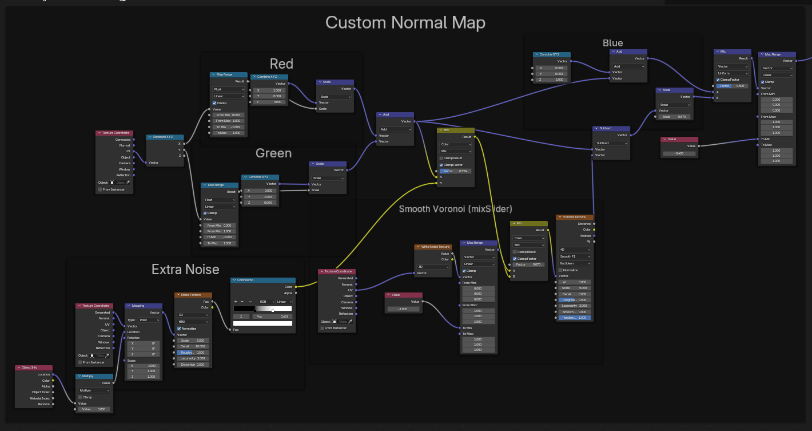

natural materials found in day-to-day nature are
most commonly used for basic NPR rendering
Custom normal map
Objects prepared - grass field, rock, clouds, background sky
Objects prepared - plane clusters, cloud materials with normal map setup used earlier
Objects prepared - suzanne, pillars, floor, background sky, stylized materials and lights